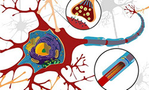
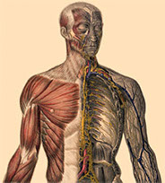

SMART MEDICAL ACCESS SYSTEM
Neuro-Muscular Diseases
A neuromuscular disease is a disorder that affects the peripheral nervous system. The peripheral nervous system includes muscles, the nerve-muscle (neuromuscular) junction, peripheral nerves in the limbs, and the motor-nerve cells in the spinal cord. Other spinal cord or brain diseases are not considered “neuromuscular” diseases.
Patients with neuromuscular diseases can have weakness, loss of muscle bulk, muscle twitching, cramping, numbness, tingling, and a host of other symptoms. Problems with the nerve-muscle junction can also cause droopy eyelids, double vision, and weakness that worsen with activity. Some neuromuscular disorders can also cause difficulty with swallowing and sometimes with breathing. For more information click here
Causes
Neuromuscular disease can be caused by circulatory problems (stroke, etc.), immunological and autoimmune disorders, the failure of the electrical insulation surrounding nerves myelin, genetic/hereditary disorders, such as Huntington's disease, certain rare tumors, the failure of the connections between the nerves and the muscle fibers, exposure to pernicious environmental chemicals, poisoning (including heavy metal poisoning), and importantly, unknown causes. The failure of the electrical insulation surrounding nerves, the myelin, is seen in certain deficiency diseases, such as the failure of the body's system for absorbing vitamin B-12, and also the failure of the myelin is seen in multiple sclerosis and some other neurological diseases, especially in autoimmune diseases that are thought to attack the myelin. For more information click here
Cure
At present, there’s no cure for most neuromuscular diseases — although the day is rapidly approaching when genetic and drug therapies will change that situation. For immune-mediated disorders, drug therapies can be very effective for treating or reversing symptomsMedical interventions have increased the life span and improved quality of life for many medically fragile children. These interventions focus on treating or delaying symptoms, enhancing physical mobility and social interactions, and preventing heart and lung complications. For more information click here
Know About
Causes
Cure